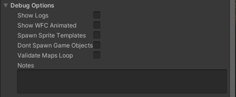

Debug Options

Show Logs
Causes debug messages to log to the console when generating the map. Useful for understanding the generation process or troubleshooting issues.
Show WFC Animated
Only works in Play Mode. If this is checked on and the map generation happens at runtime, it will be animated to show one step at a time. This was mostly useful during development, but it looks cool and helps visualize the Wave Function Collapse algorithm in action.
Spawn Sprite Templates
This will spawn a quad with the sprite template texture for easier visualization of map layouts. The spawned quad is positioned slightly below the module prefabs so you can see the underlying 2D template.
Don’t Spawn Game Objects
This will prevent spawning of module prefabs. You’ll usually use this combined with enabling "Spawn Sprite Templates” because otherwise nothing will show up when you generate the map.
Validate Maps Loop
Only works in Play Mode. This will continually regenerate the map over and over at runtime. This is very useful for testing your settings to make sure that no invalid maps are generated. During development, tens of thousands of generations were tested using reasonable settings and found no issues, but using very extreme settings may result in invalid maps. A map is “invalid” when:
- There are not enough rooms to support the "required" rooms.
- There are parts of the map that can't be reached.
- NavMesh pathfinding fails between connected areas. In a valid map, every room and corridor can be reached from any other room or corridor. It is recommended that you run this overnight after you’ve determined what settings you are going to use so that you can validate that there are no critical failures of invalid maps. Generally you’ll want to make sure "Randomize Seed" is turned on when using this option.
Notes
This is just a text field for your own notes. Use it to document specific random seeds you want to test or remember, or any other notes about your map settings.